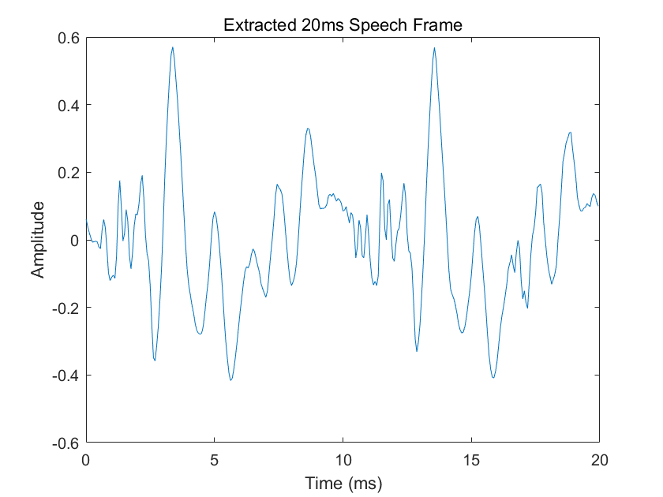
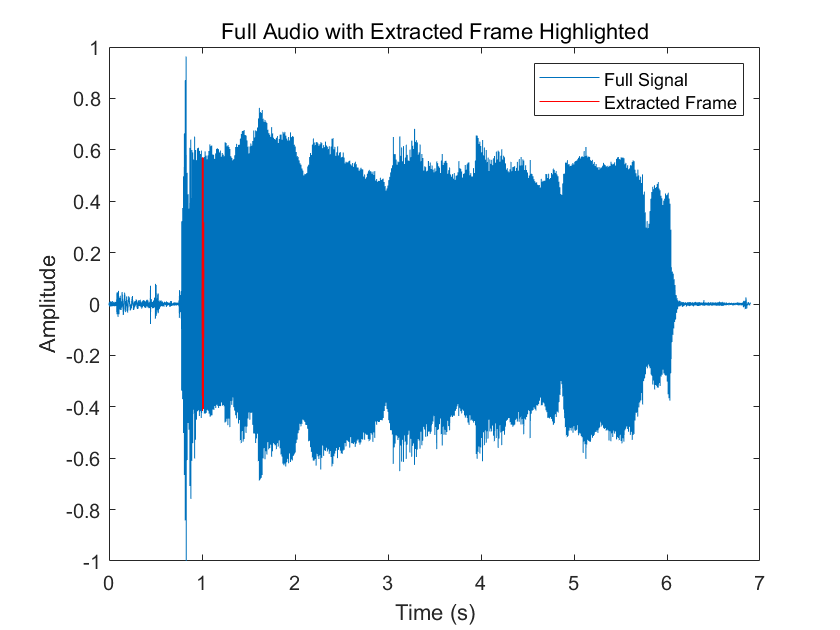

This page is just a start point by analysing a simple frame of vowel voice (“ah”) and estimate the fundamental frequency
(f₀) and measure harmonic inharmonicity (Δk).
The extracted 20 ms frame (starting at 1 s):
The red segment shows where the 20 ms frame lies in the entire speech recording:

A 500-point grid between 50 Hz and 400 Hz
is evaluated. For each candidate we build an
8 × N harmonic matrix and record the residual
energy ‖x − U a‖². The global minimum is:
Coarse-scan f0 = 98.20 Hz
Coarse-scan w0 = 617.00 rad/s(red marker in the residual plot below)
The initial coarse scan merely shows where
the global valley of the residual curve lies.
To lock onto the exact minimum we run
estimate_omega0
(Elvander & Jakobsson 2020),
which repeats the following loop until the search interval
is < 10⁻¹² rad/s wide:
[ωL, ωH].‖x – U(ω) (U(ω)\x)‖²Refined f0 = 98.205 Hz
Refined w0 = 617.043 rad/s
Iterations = 5 (≈ 7 ms on a laptop)
The refined f₀ / w₀ serves as the harmonic
baseline for the inharmonicity analysis in Step 3.
A real voice is never perfectly harmonic: every partial can drift
a few hertz due to jitter, vocal-tract interaction or
measurement noise.
We therefore estimate all sinusoidal frequencies
ω̂k and the best global pitch
ω₀ in a single optimisation, using the
Optimal Mass Transport (OMT) prior
proposed by Elvander & Jakobsson (2023).
J(ω̂,a) = N · log ‖y − A(ω̂)a‖² + (1 / 2σΔ²) · Σk |ak|² (ω̂k − kω₀)²
A(ω̂) — N × K harmonic matrix
ej k ω̂ ta — complex amplitudes (optimised together)ω₀ ≡ ω₀(ω̂,a)
= Σ|ak|² ω̂k /
Σ|ak|² k² σΔ = 2 Hz ⇒
λ = 1 / (2σΔ²)
The first term favours a close fit to the waveform,
the second pulls each partial toward its integer grid position
k·ω₀ with a quadratic “transport” cost.
ω̂k,0 = k·ω₀LS.[ ω̂1:K, Re{a}1:K,
Im{a}1:K ] → 3K dims.fminsearch, tol = 10-10).
Converges in ≈ 30–50 iterations for a 20 ms frame.f0,LS = 98.205 Hz | f0,OMT = 98.181 Hz (difference 0.025 Hz)
| k | ω̂k (Hz) | k·f0,OMT (Hz) | Δk (Hz) |
|---|---|---|---|
| 1 | 101.846 | 98.181 | +3.673 |
| 2 | 194.872 | 196.362 | −1.496 |
| 3 | 294.725 | 294.544 | +0.191 |
| 4 | 390.122 | 392.725 | −2.600 |
| 5 | 488.501 | 490.906 | −2.401 |
| 6 | 590.860 | 589.087 | +1.780 |
| 7 | 684.763 | 687.269 | −2.508 |
| 8 | 786.328 | 785.450 | +0.888 |
For each recording we slide a 20 ms frame with a
10 ms hop. Each frame’s fundamental frequency
(f₀) and inharmonic offsets
(Δk, k = 1‒8) are estimated via the
OMT-based routine established earlier.
After discarding unvoiced or abnormal frames (f₀ < 80 Hz
or > 300 Hz), we summarise every recording by the mean and standard
deviation of each Δk. Below are the raw
statistics per recording.
Recording1.wav)
Valid voiced frames : 212
Mean f0 (OMT) : 88.23 ± 3.13 Hz
Per-harmonic statistics (Hz)
k | mean | std
---+-------+------
1 | 7.59 | 5.91
2 | 5.81 | 16.92
3 | -6.31 | 24.56
4 | -4.48 | 26.80
5 | 2.97 | 17.62
6 | 2.07 | 15.52
7 | -1.50 | 7.30
8 | 0.71 | 15.12
…粘贴 Δ 表格…
…粘贴 Δ 表格…